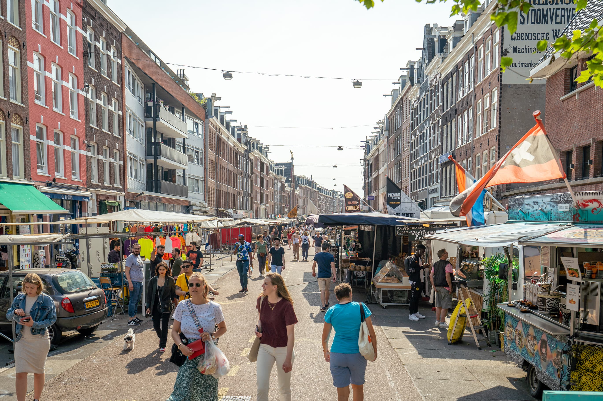
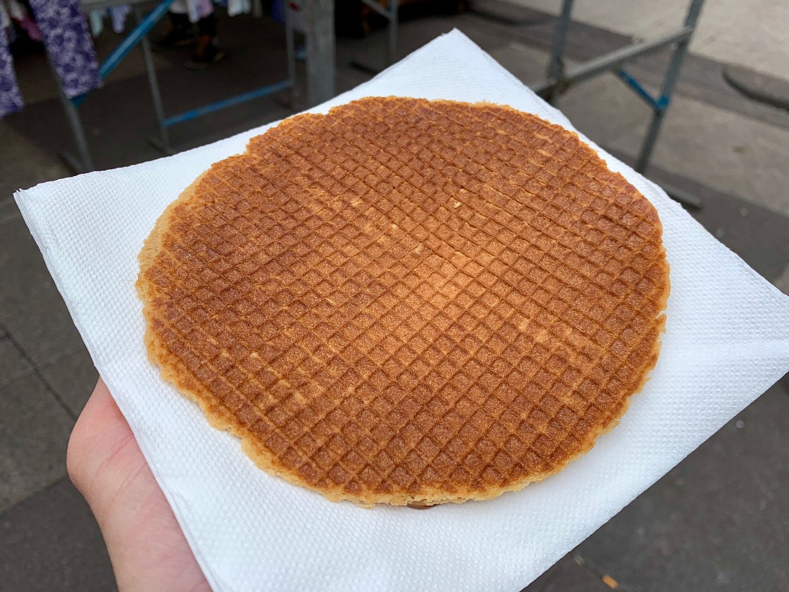
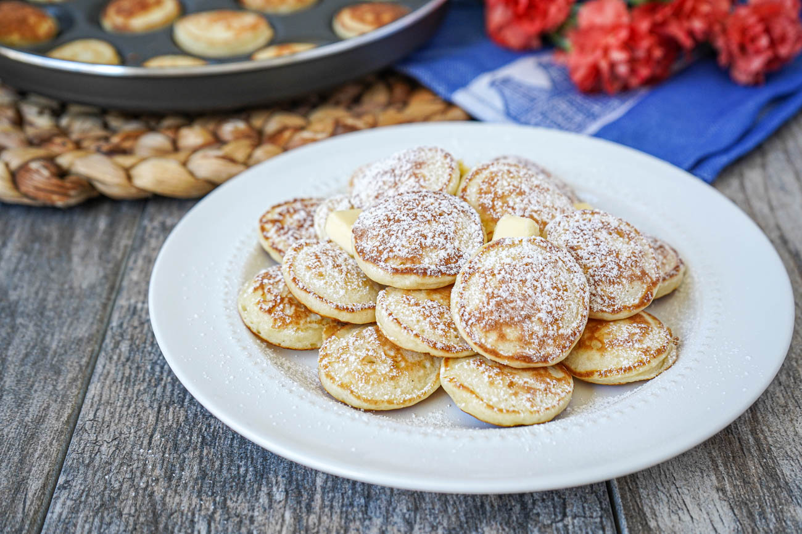

A family that's mostly vegetarian in a city with excellent vegetarian food, and some of the best street food in Europe.
Europe's largest open-air daily market, stretching for over a kilometre along Albert Cuypstraat. Hundreds of stalls: fresh stroopwafels made on the spot, herring carts, Dutch cheeses, flowers, clothing, produce, and food from around the world.
The fresh stroopwafel at the market is one of Amsterdam's genuine food experiences: hot, just-made, with syrup still warm. Don't buy the packaged ones at the airport. Get them here.

From the market, walk two blocks south to Sarphatipark, a quiet neighbourhood park with a playground. A good combination for a morning out with Bodhi.
Saturdays 9:00–16:00 in the Jordaan. Amsterdam's best organic market: exceptional bread, cheese, prepared food, and produce. Combine it with a walk through the Jordaan's canal streets. About 30 minutes from Plantage by tram or 25 minutes walking.
Europe's largest flea market, at NDSM-wharf in Amsterdam Noord. 750 stalls. Take the free GVB ferry from behind Centraal Station, a fun mini-adventure for Bodhi. Entry ~€6/adult. Good for vintage finds, interesting junk, and a very Dutch atmosphere.
At Park Frankendael, 11:00–18:00. High-quality artisan food stalls, live music, and a relaxed park setting. Free entry. One of Amsterdam's nicest weekend markets: mainly locals, not a tourist market. Good final-Sunday activity before the Monday departure.
Artisan goods, handmade crafts, and live music at De Hallen in Oud-West, about 15 minutes by tram. Free entry. Adjacent to Foodhallen, which is the best indoor food hall in the city.
The family is mostly vegetarian. Amsterdam is genuinely good for this.
Dutch cuisine includes plenty of naturally vegetarian dishes: poffertjes, Dutch pancakes, stamppot, cheese. The city also has a very strong vegetarian/vegan restaurant scene. Most cafés and restaurants will have good veggie options, and dedicated vegetarian restaurants are common.
The Pancake Bakery (Prinsengracht 191) is the classic: a canal-house basement with pancakes as big as plates. MOAK Pancakes is bigger, modern, and good for families with various dietary needs. Both are in the Jordaan/canal area, about 25 minutes from Plantage.
De Hallen, Hannie Dankbaarpassage 33. An indoor food hall in a converted tram depot in Oud-West. Around 20 food stalls covering every cuisine. Everyone can order something different, there's plenty of space, and the atmosphere is lively but not overwhelming. Good solution for a group with different food preferences.

Albert Heijn at Museumplein (Van Baerlestraat 33a, underground, open 8AM–10PM daily) is the closest large supermarket. Well-stocked for family groceries including diapers, baby food pouches, and snacks for Bodhi. Cooking even half your meals in the apartment saves significant money over 10 days.